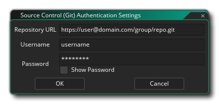
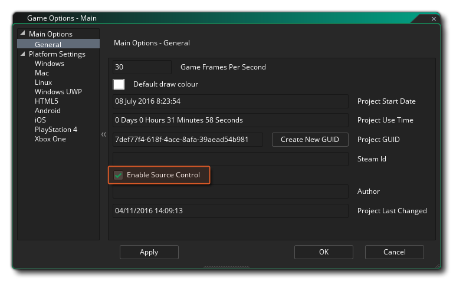
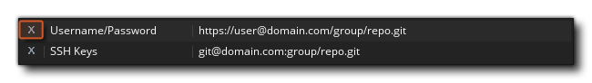
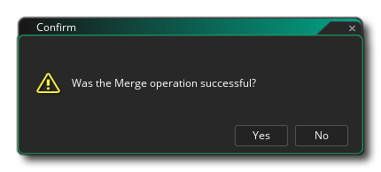
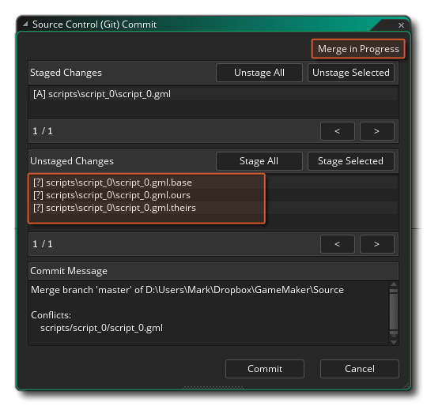

Source Control Management (SCM) ist die Bezeichnung für die Methode, mit Unterversionen oder Sicherungen Ihrer Projekte über ein Repository und eine lokale Quelle zu arbeiten. Grundsätzlich handelt es sich bei einer SCM-Lösung um ein unabhängiges Softwarepaket, das alle Aspekte der Verwaltung, Änderung und Vergleich von Versionen Ihres Projekts während der Arbeit steuert. Dies ist besonders nützlich für diejenigen, die in einem Team arbeiten und in der Lage sein müssen, zu kontrollieren, wer was tut, und sich keine Sorgen darüber zu machen, dass Daten verloren gehen oder Änderungen vorgenommen werden müssen, die möglicherweise zu einem späteren Zeitpunkt rückgängig gemacht werden System auch.
Ihnen stehen verschiedene SCM-Tools zur Verfügung. Im Lieferumfang von GameMaker Studio 2 ist ein Git-Plugin enthalten, das sofort verwendet werden kann. Es ist nicht erforderlich, zusätzliche Pakete zu installieren, da es alles im Plugin selbst enthalten ist. Nachfolgend geben wir ein kleines Tutorial, wie Sie dieses Plugin einrichten und die SCM-Tools mit einem Projekt verwenden können. Am Ende der Seite finden Sie auch eine Übersicht über das SCM-Kontextmenü, auf das auch in den Lernabschnitten verwiesen wird.
Als Erstes müssen wir eine Identität für Git als Commit erstellen, was bedeutet, dass Sie zum Abschnitt Plugins - Source Control (Git) der Voreinstellungen gehen und Ihre Authentifizierungsdetails hinzufügen müssen.
Diese Authentifizierungsidentität wird für alle zukünftigen Projekte verwendet. GameMaker Studio 2 bietet Ihnen zwei Möglichkeiten, es einzurichten:
- Benutzername und Passwort: Wenn Sie auf die Schaltfläche "Neuen Benutzer hinzufügen / Authentifizierung hinzufügen" klicken, wird das folgende Fenster angezeigt, in dem Sie die Repository-URL, den Benutzernamen und das Passord eingeben können:  Wenn Sie möchten, dass sich dies nur auf ein bestimmtes Repository auswirkt, setzen Sie die URL für das Repository in das oberste Feld. Wenn es sich jedoch um eine domänenweite Authentifizierung handelt (z. B. " bitbucket.org " oder " github.com ") Platzieren Sie einfach die Domäne und nichts anderes. Wenn etwas auf Authentifizierung überprüft werden muss, wird zuerst nach einer bestimmten Repository-Übereinstimmung und dann nach einer Domäne gesucht. Auf diese Weise können Sie eine Standardauthentifizierung für eine Domäne festlegen und überschreiben später mit spezifischen Details für bestimmte Repositories.
HINWEIS: Wenn Sie ein externes Repository verwenden, sollten Sie den Benutzernamen und das Kennwort verwenden, die mit dem für dieses Repository eingerichteten Konto verknüpft sind. Wenn Sie jedoch ein lokales Repository verwenden möchten, können Sie einen beliebigen Benutzernamen und ein beliebiges Passwort verwenden.- SSH-Schlüsselpaare: Wenn Sie auf "Neue SSH-Schlüsselpaar-Authentifizierung hinzufügen" klicken, wird das folgende Fenster angezeigt, in dem Sie die Repository-URL und das Kennwort eingeben können, bevor Sie die Pfade zu den erforderlichen öffentlichen und privaten Schlüsseldateien angeben:
Wie die Benutzername / Kennwort-Authentifizierungen können Sie bei der Verwendung von SSH-Schlüsselpaaren domänen- und repository-spezifische Authentifizierungen durchführen. Wenn Sie bereits ein SSH-Schlüsselpaar generiert haben, können Sie hier die Pfade sowie das für den Zugriff erforderliche Kennwort festlegen. Wenn Sie einen schnellen Zugriff auf den öffentlichen Schlüssel, die Schaltfläche "Kopieren", benötigen, beachten Sie
kopiert den Inhalt automatisch in die Zwischenablage. Wenn Sie noch nicht über ein SSH-Schlüsselpaar verfügen, wird durch Klicken auf die Schaltfläche Create KeyPair ( Schlüsselpaar erstellen) ein Dateidialogfeld angezeigt, in dem der private Schlüssel gespeichert werden soll. Der öffentliche Schlüssel wird neben dem Schlüssel erstellt Öffentliche und private Schlüssel automatisch für Sie.
Diese Einstellungen werden jetzt für die Kommunikation mit dem Repository (IE: Git Hub, Bit Bucket usw.) beim Umgang mit Klon-, Push- und Pull-Anforderungen verwendet. Allerdings müssen Sie noch die pro-Projektoptionen einzurichten, die durch die Öffnung der getan werden kann, Hauptoptionen und dann auf die Aktivieren Source Control Option. Dadurch wird SCM für das aktuelle Projekt aktiviert. Nachdem Sie die Quellcodeverwaltung aktiviert haben (und sie angewendet oder die Spieloptionen geschlossen haben), wird ein neues Kontextmenü mit der folgenden Option oben in der IDE angezeigt (die wir in den restlichen Abschnitten dieser Seite untersuchen werden):
HINWEIS: Wenn Sie die Authentifizierungsdetails erneut bearbeiten müssen, doppelklicken Sie einfach auf den Eintrag. Das Fenster mit den Details wird geöffnet, aber Sie können die URL nicht umbenennen. Wenn Sie die URL ändern müssen, müssen Sie die Authentifizierungsdetails löschen und erneut hinzufügen. Um die Authentifizierungsdetails zu löschen, klicken Sie im Hauptfenster der Voreinstellungen auf die Schaltfläche Schließen links neben der Zeile. 
Jetzt müssen Sie die GameMaker Studio 2 IDE mit einem Repository verknüpfen:
- Erstellen Sie ein Projekt-Repository
- Schieben Sie das aktuelle Projekt in ein externes Repository
- Klonen Sie ein vorhandenes Repository
Im ersten Fall wird beim Erstellen eines Projekt-Repositorys ein Git-Repository direkt dort erstellt, wo sich Ihr Projekt befindet. In Git parlance ist dies ein "nicht-nacktes Repository", also macht Push / Pull in diesem Fall keinen Sinn, aber Sie können Projektänderungen immer noch festschreiben und verfolgen und Änderungen und Revisionen gegebenenfalls rückgängig machen. Um dies einzurichten, klicken Sie im Hauptmenü auf Source Control > Create Project Repository.
Möglicherweise haben Sie jedoch bereits ein Projekt und möchten es in einem externen Repository ablegen, um es in Ihrem Team zu verfolgen und zu teilen. Dies erfordert, dass bereits ein externes Repository eingerichtet wurde und der richtige Benutzername und das richtige Kennwort in Ihren Identitätseinstellungen festgelegt sind, um darauf zuzugreifen. Wenn Sie dies vorbereitet haben, klicken Sie auf Quellcodeverwaltung > Projekt in Repository importieren und geben Sie die URL ein.
Schließlich als Komfortfunktion können Sie ein externes Repository durch die IDE klonen. In diesem Fall benötigen Sie den Benutzernamen und das Kennwort für das Repository, zu dem Sie eine Verbindung herstellen möchten, in Ihren Identitätseinstellungen. Dann klicken Sie nur auf Source Control > Clone Repository. Füllen Sie die URL aus (verwenden Sie statt HTH die HTTPS-Variante) und geben Sie an, wohin sie gehen soll.
Sobald der Klon fertig ist, öffnet sich automatisch ein Dateibrowser, mit dem Sie das Projekt öffnen können, wenn Sie möchten.
Während Sie an Ihrem Projekt arbeiten, werden Sie natürlich Sprites erstellen, Skripte bearbeiten, Zeitleisten löschen und was sonst noch erforderlich ist, wenn sich Ihr Projekt im Laufe der Zeit entwickelt. Dies sind alles Aktionen, die Sie möglicherweise im Auge behalten und zurückbekommen sollten, falls etwas schief geht. Dies ist der Hauptgrund für die Verwendung von Source Control - damit Unfälle rückgängig gemacht werden können - und wir werden Sie von Anfang an schnell durch den grundlegenden Workflow führen, damit Sie wissen, wie das funktioniert.
Erstellen Sie von Anfang an ein neues GML-Projekt, und aktivieren Sie die Quellcodeverwaltung über die Hauptoptionen. Dies gibt uns Zugriff auf das Source Control-Menü oben, so dass wir sofort zum Projekt-Repository erstellen gehen. Wenn Sie sich die Raumressourcen anschauen, können Sie feststellen, dass der Standardraum einen roten Ausruf erhalten hat
Das bedeutet, dass es vom letzten Status geändert wurde. Wenn wir andere Ressourcen im Projekt hätten, würden Sie sehen, dass alle dasselbe Symbol wie in der Abbildung unten gezeigt haben:
Wir haben jetzt die Möglichkeit, entweder das leere Projekt zu übernehmen oder es in einen Basiszustand zu bringen. Im Moment machen wir unser erstes Commit, also klicken Sie auf Source Control > Commit Changes. Dies wird Wir erhalten nun ein Fenster, das in drei Bereiche unterteilt ist:
- Gestaffelte Änderungen - Dies sind die Änderungen, die an die Quelle übergeben werden. Das ist wahrscheinlich leer, aber es kann eine Änderung der Hauptoptionen angezeigt werden, was in Ordnung ist.
- Nicht bereitgestellte Änderungen - Dies zeigt die Dateien an, die geändert wurden, aber wir haben Git nicht mitgeteilt, dass wir sie festlegen möchten - sie sind "ausstehende" Änderungen.
- Commit Message - Dies ist ein Hinweis, den wir hinzufügen können, um die Änderungen zu erläutern.
Klicken Sie vorerst auf die Schaltfläche Alle bereitstellen, da alle Änderungen übernommen werden sollen, und geben Sie etwas wie "First Commit!" in die Commit-Nachricht und klicken Sie auf Commit. Alle unsere Ressourcen sollten jetzt einen grünen Haken haben
Das heißt, es wurden keine Änderungen gefunden.
Es ist erwähnenswert, dass bei der Arbeit innerhalb dieses Fensters den verschiedenen gestuften und nicht bereitgestellten Meldungen ein Symbol vorangestellt wird. Das verwendete Symbol hängt von der Operation und der Datei ab, wobei Folgendes verwendet wird:
- [...] - Inszenierte Änderung (war zuvor [A] )
- [+] - Neu hinzugefügt
- [->] - Umbenannt / verschoben
- [-] - entfernt
- [M] - Nicht inszenierte Änderungen
- [?] - Nicht getrackte Datei
- [!] - Fehlende Datei
Unser Arbeitsprozess kann jetzt beginnen, und wir können damit beginnen, unser Projekt zu erstellen und Änderungen zu speichern und zu übernehmen, genau wie in den obigen Abschnitten.
Nachdem Sie eine Weile gearbeitet haben, möchten Sie möglicherweise überprüfen, was Sie zu einem bestimmten Zeitpunkt festgelegt haben. Daher möchten Sie das Commit-Protokoll öffnen. Um das Verlaufsfenster zu öffnen, wechseln Sie einfach zu Quellcodeverwaltung > Verlauf anzeigen, um ein weiteres Fenster mit drei Bereichen zu öffnen:
Der obere Bereich beschreibt die Commits, der mittlere Bereich beschreibt den Kommentar, der zum ausgewählten Commit gegeben wurde, und der untere Bereich beschreibt die Dateien, die in diesem Commit geändert wurden. Wenn Sie ein Vergleichstool eingerichtet haben, öffnen Sie durch Doppelklicken auf eine Datei in diesem Fenster das Vergleichstool, und Sie können die Änderungen zwischen den Dateien sehen.
Oben haben Sie gesehen, wie Sie ein Repository erstellen und Dinge festschreiben, aber was passiert, wenn Sie einen Fehler machen und zu einem vorherigen Commit zurückrollen möchten? Lasst uns einen absichtlichen Fehler machen und sehen, wie wir dann damit umgehen können...
Erstellen Sie zunächst eine neue Ressource - in diesem Beispiel erstellen wir eine Script-Ressource -, und Sie sehen zunächst kein Statussymbol, da es für die Quellcodeverwaltung noch nicht existiert. Fügen Sie in der Skriptressource eine einfache Codezeile hinzu:
show_debug_message("Hello World");
Wenn Sie nun den Code-Editor schließen, werden das Skript und das Symbol der geänderten Datei gespeichert
Die vorgenommenen Änderungen werden sein:
- die.yyp-Projektdatei
- eine Ansichtsdatei
- das Skript GML selbst
- die.yy-Datei, die darauf verweist
Sie sollten eine Commit-Nachricht eingeben und dann auf die Commit- Schaltfläche klicken, genau wie zuvor erläutert. Jetzt kehren wir zu unserem Skript zurück und ändern die Codezeile in (zum Beispiel):
show_debug_message("Hello World, how are you?");
Wenn wir den Code-Editor schließen, wird neben dem Skript wieder ein rotes Symbol angezeigt. Wir haben jedoch festgestellt, dass wir mit unserem Code einen Fehler gemacht haben, und wir möchten zu einer früheren Version zurückkehren, um das Problem zu beheben (natürlich könnten Sie das tun.) Öffnen Sie das Skript und korrigieren Sie es leicht, da das Beispiel so einfach ist, aber in großen Projekten ist dies normalerweise nicht möglich. Was wir tun müssen, ist, unsere Änderungen rückgängig zu machen.
Um eine Änderung rückgängig zu machen, müssen Sie zunächst das Commit-Fenster erneut öffnen. Gehen Sie also noch einmal zu Source Control > Commit Changes. Unsere geänderte Datei wird erneut bereit zur Ausführung bereit gestellt. Dies ist jedoch nicht das, was wir wollen. Klicken Sie auf die Schaltfläche Unstage All, um sie aus dem Bereitstellungsbereich zu entfernen.
Wenn wir jetzt mit der rechten Maustaste klicken
In der Datei, die wir geändert haben, erhalten Sie ein Kontextmenü mit einer Option zum Wiederherstellen des Pfads:
Wenn Sie diese Option auswählen, setzen Sie die Dateien in den vorherigen Zustand zurück, in dem sie sich befanden.
WICHTIG! Nach dem Zurücksetzen wird eine Meldung angezeigt, in der Sie aufgefordert werden, das aktuelle Projekt erneut zu laden oder zu speichern, da der Datei-Checker Änderungen auf der Festplatte feststellt:Sie müssen auf Neu laden und nicht auf Speichern klicken, da beim Speichern eher der Arbeitsspeicher gespeichert wird, als die wiederhergestellten Dateien erneut zu laden.
Das ist großartig, wenn Sie etwas bearbeiten und zurückwechseln möchten, ohne bereits einen Commit ausgeführt zu haben. Aber wie sieht es aus, wenn Sie eine oder mehrere Änderungen vorgenommen haben und zu einem vorherigen Commit zurückkehren möchten? Nun, lassen Sie uns unser Skript noch einmal bearbeiten, um zu sagen:show_debug_message("This is a bad idea");
Jetzt legen wir es wie zuvor fest, um es unter Quellcodeverwaltung zu bekommen. Dies war also eine schlechte Idee, und wir möchten einen Rollback ausführen. Das bedeutet, dass wir zunächst das Fenster Quellcodeverwaltung > Ansichtsverlauf erneut öffnen müssen. In diesem Fenster sehen Sie jetzt eine Liste aller vorherigen Commits, beginnend mit dem ursprünglichen Commit, dem Commit für das Skript und dem Commit für das Skript, das wir als "schlechte Idee" bearbeitet haben:
Wir haben jetzt zwei Möglichkeiten. Wir können eine vollständige Revision zurücksetzen, wodurch alle Dateien, die geändert wurden, in die gewählte Übergabe zurückgesetzt werden, oder wir können einen Pfad zurücksetzen, der einfach eine einzelne Datei zurücksetzt. Lassen Sie uns die erste Option tun, um mit zu beginnen:
- Rechtsklick
- Wählen Sie "Reverse To This Revision" (Revert To This Revision) und wählen Sie in der Warnmeldung " ReLoad".
Sie sollten sehen, dass das Skript jetzt ein rotes Statussymbol hat
Wir können dann ein Commit für das Projekt machen und wir werden wieder dort sein, wo wir wieder waren. Wir können diese Aktion jedoch auch rückgängig machen und die "schlechte Idee" zurückschreiben, indem Sie Folgendes tun:
- Öffnen Sie das Commit Changes- Fenster.
- Entpacken Sie das Skript mit dem "Hello World" -Code.
- Rechtsklick
Jetzt haben wir wieder die fehlerhafte Datei im Projekt! Nun, wir können diese Gelegenheit nutzen, um nur diesen Dateipfad wiederherzustellen, anstatt alles auf eine frühere Version zurückzusetzen. Dafür müssen wir Folgendes tun:
- Öffnen Sie das Fenster " Verlauf anzeigen".
- Klicken Sie auf den zweiten Commit ("Hello World" - Commit).
- Rechtsklick
Wir sollten wieder mit unserem "Hello World" -Code beginnen und können dann ein neues Commit durchführen, um die Quellcodeverwaltung mit der korrigierten Datei erneut zu aktualisieren.
Wenn Ihr Projekt in einem externen Repository gespeichert ist, müssen Sie daran denken, beide Änderungen drücken und keine neue ziehen. Der Grund dafür ist, dass Sie beim Festschreiben Ihre Änderungen lokal speichern, sodass Sie sich von einer Internetverbindung trennen und sich synchronisieren können, wenn Sie bereit sind. Außerdem können Sie Ihre Änderungen in das Remote-Repository verschieben. Das Abrufen von Änderungen bedeutet, dass Sie alle Änderungen, die von anderen aus dem Remote-Repository vorgenommen wurden, in Ihr lokales Repository übernehmen möchten. Dies bedeutet jedoch, dass es manchmal Zeiten gibt, in denen Personen dieselben Dateien bearbeiten können, was wiederum zu einem Zusammenführungskonflikt führt. Sie müssen wissen, wie mit diesen Konflikten umzugehen ist, sodass wir absichtlich einen erstellen und Ihnen zeigen, wie Sie damit umgehen.
ANMERKUNG: Die Freigabe eines lokalen Projekt-Repositorys (auch über einen Dateisynchronisierungsdienst wie Dropbox) wird nicht empfohlen, da Festschreibungen im Allgemeinen direkt in das Projekt geschrieben werden und der Konfliktschutz daher sehr gering ist.
Um unseren Konflikt zu erzeugen, benötigen wir zunächst zwei lokale Repositorys, eines für das Master-Repository und eines für unsere Kopie. Um dies zu erstellen, müssen wir das Repository klonen. Dazu werden die folgenden Schritte ausgeführt:
- Gehen Sie zu Source Control > Clone Repository.
- Geben Sie in das URL-Feld den Pfad zu dem Projekt ein, das wir oben im Handbuch "Wiederherstellungsdateien" eingerichtet haben (standardmäßig ist dies der Fall) D:\Users\<Username>\Documents\GameMakerStudio2\<ProjectName> ).
- Sie müssen dann einen Pfad zum Klonen festlegen:
Wenn Sie auf die Schaltfläche "Okay" klicken, wird die folgende Warnung angezeigt, wenn Sie versuchen, ein "nicht blankes" Repository zu klonen: Sie können hier erneut auf "OK" klicken.
- Nun wird Ihnen ein Verzeichnis-Explorer angezeigt, um ein "nacktes" Proxy-Repository zu erstellen (dies ist ein Repository, das Sie zum Beispiel sicher in Dropbox speichern können ). Suchen Sie nach dem Ort, an dem Sie dieses Proxy-Repository erstellen möchten, und wählen Sie den zu verwendenden Ordner aus (oder erstellen Sie ihn).
Sobald Sie dies getan haben, wird GameMaker Studio 2 Ihr ursprüngliches Projekt an den Proxy übertragen und ein neues zu dem im Klon-Repository-Fenster festgelegten Pfad ziehen. Anschließend wird automatisch ein Dateibrowser geöffnet, in dem Sie das gespeicherte Projekt öffnen können. Wenn Sie jetzt zu Quellcodeverwaltung > Verlauf anzeigen gehen, werden unsere ursprünglichen Commits sowie ein neues "Push For Clone" angezeigt:Sie haben jetzt Ihr Repository geklont und können mit der lokalen Version des Projekts weiterarbeiten.
In diesem Abschnitt werden wir uns mit dem Lösen von Konflikten zwischen einem geklonten lokalen Repository und einem Master-Repository befassen (weitere Informationen finden Sie im Abschnitt Klonen). Wenn Sie jetzt ein lokales Repository verwenden, müssen Sie eine Datei bearbeiten und dann Konflikte verursachen. Öffnen Sie also das verwendete Testskript und ändern Sie die Nachricht "Hello World" folgendermaßen:
show_debug_message("Hello World, How Are You?");
Nun sollten Sie das Projekt speichern und in das lokale Repository einbinden. Da wir nun mit einem Remote-Master-Repository verbunden sind (selbst wenn wir auf dieselbe Festplatte geklont wurden), müssen wir einen Push durchführen, um die Änderungen an Master weiterzuleiten. Gehen Sie dazu zu Source Control > Push Changes. Dadurch erhalten Sie eine Statusaktualisierung auf der Registerkarte Source Control Output:
Nun müssen wir unser ursprüngliches Projekt öffnen (nicht das geklonte). Suchen Sie also nach dem Ort, an dem Sie es auf der Festplatte gespeichert haben - oder überprüfen Sie einfach die letzten Projekte im Datei- Menü, da es sich direkt unter dem aktuellen Projekt befinden sollte, und laden Sie es in GameMaker Studio 2. Eine einfache Möglichkeit, Sie haben das richtige Projekt zu prüfen ist, einfach das Skript überprüfen Sie haben und wenn die Nachricht „Hallo Welt“ ist, dann haben Sie die richtigen, oder Sie können die View History - Fenster öffnen und auf diese Weise überprüfen.
Jetzt müssen Sie das Skript erneut bearbeiten, so dass es etwa wie folgt lautet:
show_debug_message("This will cause a conflict.");
Dies kann auf der Festplatte gespeichert und die Änderungen festgeschrieben werden. Wenn Sie jedoch versuchen, diese Änderungen zu übernehmen, wird die folgende Meldung angezeigt:
Jemand hat bereits Änderungen vorgenommen, die Sie noch nicht haben! Dies bedeutet, dass Sie das Repository ziehen und sehen müssen, was genau das Problem ist. Gehen Sie also zu Source Control > Pull Changes. Daraufhin werden zwei Fenster angezeigt. Das erste ist eine Warnung vor geänderten Dateien (wie bei den vorherigen Aktionen möchten Sie Reload here und nicht Save wählen), und das andere ist das Fenster Conflicts:
In diesem Fenster werden die konfliktierten Dateien in einer Liste links angezeigt. Sie können die Dateien mit der linken Maustaste aus dieser Liste auswählen
(oder wählen Sie mehrere Dateien mit
+
- Use Theirs - Damit werden die Änderungen überschrieben, die Sie mit den Änderungen aus dem Remote-Repository vorgenommen haben.
- Use Mine - Hiermit werden die Änderungen aus dem Remote-Repository mit den gerade vorgenommenen Änderungen überschrieben.
- Zusammenführen - Hiermit wird versucht, ein externes Zusammenführungstool zu öffnen, um den Konflikt zu behandeln.
- Wählen Sie das Merge-Tool - Hier können Sie das Merge-Tool konfigurieren (weitere Informationen finden Sie im Abschnitt Verwenden eines externen Merge-Tools).
Jetzt können Sie die Schaltflächen verwenden, um den Konflikt zu lösen. Bevor Sie dies tun, öffnen Sie einfach die konfliktbehaftete Datei, um das Problem genau zu sehen. Wenn Sie das konfliktbehaftete Skript öffnen, sieht es jetzt folgendermaßen aus:
Dies zeigt, dass "Dies führt zu einem Konflikt" auf dem HEAD (das ist, was wir in das lokale Repository gepusht haben) und dass "Hallo Welt, wie geht es dir?" wird vom Master, dem Remote-Repository, abgerufen. Sie können jetzt zum Fenster Konflikte zurückkehren und auf Use Theirs klicken, um die geänderte Datei abzurufen und die aktuelle HEAD-Datei zu überschreiben. Das Skript wird jetzt als geändert markiert und Sie sollten ein neues Commit und Push ausführen, bevor Sie fortfahren.
Beachten Sie, dass wir dies in der GameMaker Studio 2 IDE tatsächlich beheben könnten. Wenn wir die Zeilen 1, 2, 3 und 5 entfernen, bleiben wir nur noch bei show_debug_message(“Hello World, How Are You?”) und speichern Sie es, damit wird der Konflikt gelöst, da Git davon ausgeht, dass Sie wissen, was Sie mit Ihrer eigenen Datei tun. Es ist fehleranfällig, es wird daher empfohlen, ein Zusammenführungswerkzeug zu installieren, es dann zu konfigurieren und zu verwenden, anstatt manuell einen Zusammenführungsversuch durchzuführen.
Wenn Sie an einem Projekt mit anderen Personen arbeiten, besteht immer die Möglichkeit, dass Konflikte auftreten, da mehrere Personen dieselbe Datei bearbeiten und die meisten Quellcodeverwaltungssysteme einen guten Versuch zum Zusammenführen von Konfliktdateien unternehmen können An derselben Stelle ist etwas Hilfe erforderlich, um zu wissen, was zu tun ist. Hier kommt ein Zusammenführungswerkzeug zum Anzeigen der Änderungen und lässt Sie entscheiden.
Da jedes Merge-Tool unterschiedlich ist, gibt es vier Makros, mit deren Hilfe Dateien festgelegt werden können, die im Fenster " Konflikte" eingerichtet werden können, indem Sie auf die Schaltfläche Choose Merge Tool klicken.
Wenn Sie auf diese Schaltfläche klicken, wird das Fenster " Einstellungen" im Git-Plugin geöffnet:
Hier bieten Sie einen Pfad zu dem gewählten Merge - Tool und dann einer Merge - Tool Optionen Makro (oder Makros) zu verwenden, bei der Entscheidung, was zu tun ist, mit den folgenden Optionen zur Verfügung:
- ${scm_mine}: Pfad zu Ihrer Version
- ${scm_thers}: Pfad zu ihrer Version
- ${scm_base}: Pfad zur Version, bevor die widersprüchlichen Änderungen aufgetreten sind
- ${scm_merged}: Pfad zum Speicherort des Zusammenführungswerkzeugs
Als Hilfe bei der Einrichtung füllt GameMaker Studio 2, wenn Sie einen Pfad zu bestimmten Zusammenführungswerkzeugen angeben, einige Standardeinstellungen, um mit den ersten Schritten zu beginnen, abhängig vom ausgewählten Werkzeug:
- KDiff3: ${scm_theirs} ${scm_mine} -o ${scm_merged}
- Meld: ${scm_mine} ${scm_merged} ${scm_theirs}
- Notepadd ++: ${scm_merged}
- TortoiseMerge: /base:${scm_base} /theirs:${scm_theirs} /mine:${scm_mine} /merged:${scm_merged}
Wenn Sie kein Zusammenführungswerkzeug haben (oder nicht verwenden möchten), können Sie das Skript in der IDE öffnen und versuchen, es von dort aus zu beheben.
Also zurück zu unserem Beispiel Konflikt wie oben im Abschnitt über Konflikte beschrieben... Sie haben einen Pull vom Master ausgeführt und eine der Dateien ist in Konflikt geraten. Dies öffnet das Fenster Source Control Conflicts, in dem Sie auf das konfliktbehaftete Skript und jetzt auf Zusammenführen klicken können, da Sie Ihr Zusammenführungswerkzeug konfiguriert haben. Wenn Sie auf Zusammenführen klicken, wird das Tool geöffnet, in dem Sie mit dem Konflikt fertig werden können, und dann die bereitgestellten Makros verwenden, um die erforderlichen Änderungen vorzunehmen. Wenn Sie das Zusammenführungswerkzeug beendet und geschlossen haben, zeigt die GameMaker Studio 2 IDE das folgende Bestätigungsfenster an: 
Beantworten Sie diese Aufforderung einfach mit "Ja", da Sie das Merge-Tool gerade selbst ausgeführt haben, und bestätigen Sie diese Änderung, um das Ende des Zusammenführungsvorgangs anzuzeigen ( Source Control > Commit Changes. Das Commit-Fenster wird nun angezeigt dass eine Zusammenführung läuft sowie einige nicht bereitgestellte Dateien anzeigen: 
Diese nicht bereitgestellten Dateien sind unsere Skriptdatei mit dem Zusatz von .base. .ours und .theirs. Wir können alle diese sicher löschen, klicken Sie auf
Sie können jetzt auf Commit klicken.
Aufgrund der Tatsache, dass Sie Probleme mit externen Dateien haben können, bedeutet dies, dass Ihr Workflow bei der Verwendung von Remote-Repositorys oder gemeinsam genutzten Repositorys wie folgt aussehen sollte:
Make Changes > Save > Commit > Pull > Merge > Push
Sie sollten auch ein Diff-Tool zur Verwendung beim Festschreiben an ein Repository einrichten. Dies ist Setup von den Einstellungen, wie bei dem Merge - Tool:
Das Diff-Tool wird auf die gleiche Weise wie das Merge-Tool konfiguriert, verwendet jedoch nur das ${scm_base} und ${scm_theirs} Optionen - in diesem Fall ${scm_base} repräsentiert die unveränderte Datei, während ${scm_theirs} repräsentiert den aktuellen Status der Datei. Die Tool-Optionen sollten mit den Standardoptionen für Meld, KDiff3 und TortoiseMerge vorgefüllt werden, genau wie beim Merge-Tool. Beachten Sie, dass GameMaker Studio 2 die Ausgabe einzelner Patch-Patches für Dateien nicht unterstützt. Daher gibt es für Notepad keinen Standard.
Um Änderungen zwischen aktuellen und vorherigen Versionen mit dem Vergleichstool anzuzeigen, öffnen Sie einfach das Commit- Fenster und doppelklicken Sie dann auf eine Datei. Wenn das Tool richtig eingerichtet wurde, wird es gestartet und Sie können die Änderungen zwischen den Dateien sehen.


Source Control Kontextmenü
Wenn Sie die Quellcodeverwaltung für ein Projekt aktiviert haben (Einzelheiten finden Sie im Abschnitt Einrichten des Git-Plugins für die Quellcodeverwaltung oben), zeigt GameMaker Studio 2 oben folgendes Kontextmenü: 
Hier werden die verfügbaren Optionen beschrieben (die meisten davon werden in den obigen Übungsabschnitten näher erläutert):
- Projekt-Repository erstellen: Mit dieser Option können Sie ein lokales Repository in demselben Verzeichnis wie Ihre Projektdateien erstellen.
- Projekt in Repository importieren: Mit dieser Option können Sie ein Projekt in ein externes Repository importieren.
- Repository klonen: Mit dieser Option können Sie ein Repository von einer Quelle auf ein neues Ziel klonen.
- Änderungen übernehmen: Mit dieser Option können Sie geänderte Dateien in Ihrem Projekt bereitstellen und anschließend in das Repository einpflegen.
- Push Changes: Nach einem Commit oder einer Zusammenführung wird diese Option verwendet, um die Änderungen in das Master-Repository zu pushen.
- Änderungen ziehen: Mit dieser Option können Sie das lokale Repository aktualisieren, indem Sie die geänderten Dateien aus dem Master-Repository ziehen.
- Verlauf anzeigen: Dadurch wird das Verlaufsfenster geöffnet, in dem Sie den gesamten Versionsverlauf des Projekts anzeigen und bestimmte Dateipfade oder ganze Versionen zurücksetzen können.
- Konflikte anzeigen: Dies öffnet das Fenster Konflikte und listet alle möglicherweise im Projekt vorhandenen Konfliktdateien auf, sodass Sie entweder über die GameMaker Studio 2 IDE oder mit einem bestimmten Merge-Tool damit umgehen können.